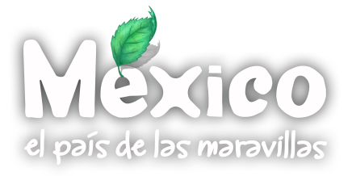

Hola amigos, me llamo Tito Curioso, estoy muy emocionado porque recientemente me enteré que ¡México es un país megadiverso! ¿Saben lo que es eso? Quiere decir que entre más de 190 países que existen en el mundo estamos entre los cinco primeros lugares en el número de especies de plantas y animales. ¿No es maravilloso? ¡Somos una gran familia! Desde entonces me he dedicado a aprender sobre la vida y obra de los seres que nos acompañan en México y en el planeta! ¡Y el adentrarse a conocer esta gran variedad de seres con los que vivimos es una aventura extraordinaria!
¿Qué les parece si nos vamos a explorar la riqueza natural de México?
¿Se animan?


Los materiales educativos desarrollados para maestros y alumnos de preprimaria y primaria son recursos didácticos enfocados a mejorar su conocimiento sobre la naturaleza de México. Los niños pueden viajar por los diversos ecosistemas de México y conocer plantas y animales representativos mediante caricaturas, fotos y videos. El sitio además incluye conceptos, juegos y sonidos.

CURRICULUM
Contenidos de educación ambiental compatibles con la SEP.
Primaria y secundaria.

RECONOCIMIENTOS
La SEP y Fundación Únete nos han otorgado lo siguientes reconocimientos.

PROGRAMA
Descarga el sitio para instalar en tus computadoras.